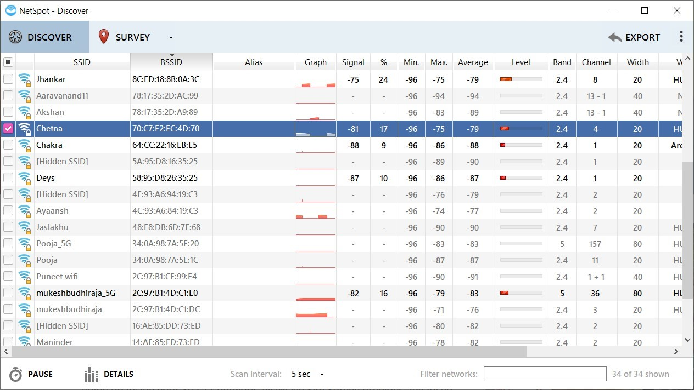
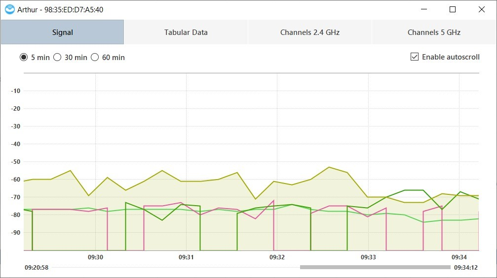
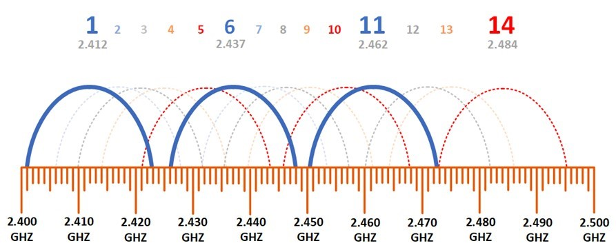

Introduction
bb1840e4-5425-49a3-9d75-477b8f016ff8
Welcome to the Implementing Wireless Security Configurations Practice Lab. In this module, you will be provided with the instructions and devices needed to develop your hands-on skills.
dc640c20-9434-45ea-b7c2-6d4d6a196bfc
Learning Outcomes
In this module, you will complete the following exercises:
- Exercise 1 - Wireless Network and its Security
After completing this module, you should have further knowledge of:
- Cryptographic Protocols
- Authentication Protocols
- Methods
- Installation Considerations
Exam Objectives
The following exam objectives are covered in this lab:
3.4 Given a scenario, install and configure wireless security settings.
- Cryptographic Protocols
- Authentication Protocols
- Methods
- Installation Considerations
Note: Our main
focus is to cover the practical, hands-on aspects of the exam
objectives. We recommend referring to course material or a search engine
to research theoretical topics in more detail.
Lab Duration
It will take approximately 45 minutes to complete this lab.
6cde82b4-969e-4ba2-9a1b-b030a82e21d0
Help and Support
For more information on using Practice Labs, please see our Help and Support page. You can also raise a technical support ticket from this page.
Click Next to view the Lab topology used in this module.
d2c53300-f951-45a9-9aa4-3d4ecae69e11
Lab Topology
This module contains supporting materials for Security+.

Click Next to proceed to the first exercise.
<
Home |
README >
CompTIA Security+ Practice Labs
Exercise 1 - Wireless Network and its Security
Wireless networks are everywhere now. The biggest
advantage of a wireless network is that it allows user mobility, unlike
an Ethernet network where the user is restricted due to an Ethernet
cable being used. A wireless network allows the user to be mobile and
connected within a certain range.
802.11 is the IEEE (Institute of Electrical and
Electronics Engineers) standard for wireless networking. 802.11b/g/n are
common standards supported on wireless access points for home networks
and for small offices. The 802.11 standard forms the underlying platform
for all wireless networks, which have different capabilities. Most
wireless routers support the following Wi-Fi standards:
802.11a
This runs at 54 Mbps and is not compatible with
802.11b as it operates at the 5 GHz band. This standard was the first
amendment of the original legacy IEEE 802.11 standard (1997) improving
data rates from up to 2 Mbps of the original standard. It can cover an
indoor area ranging from 35m to 125m.
802.11b
This provides a range of 150 feet and is the oldest
standard still in use and supported by wireless routers. This is widely
supported by wireless devices. IEEE 802.11b provides data rates of up to
11 Mbps using the 2.4 GHz band. This standard provides lower maximum
data rates, but a greater range than the 802.11a standard since the 2.4
GHz frequencies used are not as readily absorbed by walls and obstacles
as the 5 GHz frequencies used in 802.11a are.
802.11g
This is supported by all wireless devices and network
equipment today and is an economical option for buying a wireless access
point. 802.11g is the same speed as 802.11a, however, it has a longer
range of 170 feet and supports the 2.4 GHz frequency band. IEEE 802.11g
provides data rates of up to 54 Mbps. This functions in the 2.4 GHz band
(like 802.11b) but uses the same Orthogonal Frequency-Division
Multiplexing (OFDM)-based transmission scheme as 802.11a. Since the
wireless keyboard also operates at 2.4 GHz band, it is likely to cause
interference with the 802.11b network.
802.11n
This is faster than 802.11g and supported by network
devices. 802.11n has a network speed of 600 Mbps and a maximum range of
230 feet. This standard uses multiple input/multiple output (MIMO) and
may cause interference with nearby 802.11b/g networks. 802.11n has a
higher price point than 802.11g.
802.11ac
This offers a speed of 1.33 Gigabits and a similar
range to 802.11n (230 feet). IEEE 802.11ac is an amendment that improves
upon the previous IEEE 802.11 standards. Characteristics of this
standard include the introduction of wider channels (80 or 160 MHz
compared to 40 MHz for 802.11n) in the 5 GHz band, more spatial streams
(up to 8), and the addition of Multi-User MIMO (MU-MIMO). 802.11ac is
capable of transmitting data at 1300 Mbps (megabits per second) or 162.5
Mbps (megabytes per second).
Despite the speed and range of different wireless
standards, they need to be used correctly. For example, if the wireless
router or access points are not hardened, then no standard is safe for
use.
In this exercise, you will learn about wireless networks and their security.
Learning Outcomes
After completing this exercise, you should have further knowledge of:
- Cryptographic Protocols
- Authentication Protocols
- Methods
- Installation Considerations
Your Devices
This exercise contains supporting materials for Security+.

Cryptographic Protocols
A wireless network can use different cryptographic
protocols, which have evolved over the years. Even though, at one time,
Wired Equivalent Privacy (WEP) and Wi-Fi Protected Access (WPA) were
popular protocols and were widely used. However, WEP and WPA are no
longer supported by the wireless access points. WPA2 is the default
cryptography protocol that is supported by all wireless access points.
In this task, you will learn about the cryptographic protocols in a wireless network.
Wi-Fi Protected Access 2 (WPA2)
WPA is no longer considered a secure solution and has
been replaced by WPA2, also known as 802.11i, which is currently
mandatory on all Wi-Fi devices and provides CCMP and AES encryption
support. WPA2-AES is the standard for newer wireless routers where all
clients support AES. The WPA and WPA2 standards have adopted EAP with a
myriad of EAP types as official authentication mechanisms. One of these
is the EAP Transport Layer Security (EAP-TLS) that uses the Transport
Layer Security (TLS) protocol and is well-supported among wireless
vendors.
WPA2 can be implemented in two different modes:
- Preshared key: A shared secret is used to authenticate the client.
- Authentication server: An authentication server is used to authenticate the client.
Encryption Algorithm: AES, CCMP
IV Size: 48-bits
Encryption Key: 128-Bits
Integrity Check Method: CBC-MAC
WiFi Protected Access III (WPA3)
WPA3 is the successor of WPA2. It adds several new capabilities that did not exist in WPA2. It adds some capabilities, such as:
- Protection from several attacks, such as
de-authentication, handshake capture dictionary, PMKID Hash Dictionary,
KRACK exploit, and handshake capture encrypt/decrypt.
- Uses Wi-Fi Easy Connect instead of Wi-Fi Protected Setup (WPS). Wi-Fi Easy Connect uses Device Provisioning Protocol (DPP).
- Replaces Pre-Shared Key (PSK) with Simultaneous Authentication of Equals (SAE)
- Supports Protected Management Frames (PMF)
- Blocks authentication after certain number of failed attempts
Encryption Algorithm: AES-GCM & Elliptical Curve Cryptography of CNSA Suite B
Encryption Key: 192-Bits for Enterprise, 128-bit for Personal
Integrity Check Method: Secure Hash Algorithm
Counter Mode Cipher Block Chaining Message Authentication Code Protocol (Counter Mode CBC-MAC Protocol) (CCMP)
CCMP is an AES encryption-based protocol that is used
in the 802.11i network. It is mainly designed to provide
confidentiality, data origin authentication, and integrity that needs to
be transmitted from one endpoint to another endpoint. However, it is
important to note that CCMP does not provide fault tolerance and
reliability.
It uses different elements for the data security. For
example, Counter CTR mode ciphers, which is a block cipher, secures the
data during transmission. It uses CBC-MAC to prevent data modification
during its transmission.
Simultaneous Authentication of Equals (SAE)
In a typical wireless network, if it does not have
enterprise mode enabled, you need to provide a password to connect to
it. Simultaneous Authentication of Equals or SAE adds another element in
the authentication process. Along with the password, it also enforces
the MAC address authentication.
At the base of it, SAE uses Diffie-Hellman key
exchange method. However, it adds an additional authentication
requirement, which is authenticating the MAC address as well. The SAE
process starts with the SAE exchange after which the client and the
wireless access point (WAP), both create an encryption key that is
further used to create a session key. After the session key is
generated, the client is able to connect to the WAP.
The key advantage of SAE is that each time the session
key is uniquely generated. If one key is compromised, the other
sessions are not impacted.
Authentication Protocols
There are several different types of authentication
protocols. However, it is only your requirement that will help you
decide which type of protocol to use. For example, you may want a
certificate-based protocol to be used. If you do not have a certificate
authority (CA), then you can choose a protocol that does not require
certificate-based authentication.
Let’s look at some of the key authentication protocols.
IEEE 802.1X
IEEE 802.1X uses port-based network access control.
When a device attempts to connect to the network, it authenticates the
device and then opens a virtual port on the wireless access point.
However, if authentication fails, then the device is not allowed to
access the network. Essentially, there are three components that play a
critical role:
- Suppliant: It is the device that has to connect to the network. It would usually have a software that is used for connectivity
- Authenticator: it is the wireless access point in the case of the wireless network. It could also be a firewall or a proxy server.
- Authentication Server: it is the authentication server that grants or denies access. Typically, this role is played by a RADIUS server.
When a suppliant attempts to connect to the network,
the authenticator immediately sets the ports to which they are connected
to the unauthenticated state. The authenticator sends a set of frames
requesting for authentication credentials. The suppliant then provides
authentication credentials. After receiving the credentials, the
authenticator sends them to the authentication server, which then
verifies and informs the authenticator. After receiving the response
from the authentication server, if credentials are accepted, the
authenticator sets the port status to authenticated. After the device
disconnects from the network, the authenticator changes the port status
is changed to unauthenticated.
Extensible Authentication Protocol (EAP)
IEEE 802.1x uses EAP for sharing the authentication
information between the supplicant and the authentication server, such
as a RADIUS server. The EAP protocol is the actual carrier for the
authentication information and is used with variety of wireless
protocols, such as WPA and WPA2.
There are different variants of EAP. Some of them use
certificates while others do not. One of the drawbacks of EAP is that
it, by default, does not secure the authentication information. It takes
it for granted that the information that it is carrying is secured or
encrypted.
Protected Extensible Application Protocol (PEAP)
Protected Extensible Application Protocol or PEAP was
an improvement over EAP. Because EAP does not encrypt the information
that it carries. PEAP made an improvement over this drawback and
corrected it by using a secure Transport Layer Security (TLS) tunnel.
PEAP uses a TLS tunnel to transport information from
one end to the other end, which are essentially the suppliant and the
authenticator. The information is encrypted and authenticated by a
server-side certificate to ensure it cannot be tampered with. TLS is the
security protocol used by PEAP. TLS is used to add encryption and
authentication to the protocols.
PEAP is mainly used with 802.1X wireless access
points and switches. It is also used by Windows-based VPN and Terminal
Services Gateway.
EAP Flexible Authentication via Secure Tunneling (EAP FAST)
Unlike PEAP, EAP-FAST does not use a certificate for
authentication. It rather uses Protected Access Credential (PAC). Like
EAP, EAP-FAST also has three components, suppliant, authenticator, and
the authentication server, which manages the PAC. The authentication
server is responsible for distributing PAC to the suppliant, which is
the client. The PAC can either be distributed manually or automatically.
The authentication server provides a shared secret to
the suppliant. After this, a secured tunnel is established between both
the ends, the authentication server and the client. Finally, the
suppliant is authenticated.
EAP Transport Layer Security (EAP-TLS)
EAP Transport Layer Security (EAP-TLS) makes use of
the TLS protocol. EAP-TLS requires two certificates, one at the client
end and another one at the server end. The authentication is performed
based on the certificate rather than the user credentials. Even if
someone intercepts the user credentials, they will still not be able to
connect to the wireless network. This is because the certificate is
required for authentication.
EAP Tunneled Transport Layer Security (EAP TTLS)
EAP TLS required certificates for authentication.
This can be a big drawback in an enterprise environment where there are
thousands of devices connecting to a wireless network. EAP TTLS removes
this bottleneck by using a secure tunnel between the authentication
server and the suppliant. It does not require a certificate like EAP TLS
does.
After a secure tunnel is created, the suppliant can
use the user credentials to authenticate itself with the authentication
server. Because the tunnel is secured, it prevents any type of attack,
such as eavesdropping, to take place for intercepting the user
credentials.
Remote Authentication Dial-in User Server (RADIUS) Federation
Network administrators deploy remote access servers
(RAS) that give mobile users the capability to dial-up and connect to
corporate resources like folders, files and applications. For
scalability, network managers add more RAS servers and deploy a modem
pool to accommodate more dial-in users. However, this infrastructure
upgrade will require more resource to be spent for the hardware, long
distance call charges and toll-free telephone service. A company may opt
to outsource their remote access services to a third party to save on
telephone charges but there is a security risk of entrusting and
managing your dial-up user accounts to an external organization,
typically Internet Service Providers (ISPs).
Fortunately, the problem of managing user accounts
and security can be addressed with the use of virtual private networks
and Remote Authentication Dial-in User Service (RADIUS). Virtual private
networks (VPNs) make use of an existing Internet connection to connect
to corporate network resources. Therefore, a user can be located
anywhere in the world and be able to gain access to network resources by
using the Internet and then connecting to the VPN server. While RADIUS
provides a centralized infrastructure for authentication of dial-in VPN
users, authorization for access of network resources and count the
number of minutes a dial-in user spends in a remote session.
The following statements are true for RADIUS:
- There is a common authentication system and credentials database.
- Each member retains its own administrative control.
- Members of the federation share the same level of trust.
Methods
There are several methods to connect to a wireless
network. It is quite a possibility that the wireless network does not
require a password. However, in most cases, a password is required, it
all depends on the configuration of the wireless network. In an office
environment that is running a directory service, such as Active
Directory, the administrator may simply integrate authentication so that
the users are authenticated based on their accounts. In such a case,
the user does not have to provide the user credentials for accessing the
wireless network.
In this task, you will learn about different methods of accessing a wireless network.
Pre-shared key (PSK) vs. Enterprise vs. Open
A wireless network can be configured in different
modes, which are PSK, enterprise, or open. In the enterprise mode, a
RADIUS server is used for authenticating the user. In this mode of
implementation, encrypted session keys are sent to the client from the
RADIUS server. To make it more secure, certificates can be integrated
with the private/public key pair. When a user attempts to connect to the
wireless network, the user is authenticated based on his own user
credentials, which can be stored in Active Directory.
In the pre-shared mode, the client and the wireless
access point must exchange and negotiate a key before the communication
can begin. It does not utilize the RADIUS server as the communication is
directly between the client and the wireless access point. In the open
mode, there is no authentication and is unsecured. It is usually used in
public wireless access points where there is no access to the sensitive
data.
In the open mode, there is no authentication
performed when a user attempts to connect to the wireless network. User
simply selects the network and connects to it without providing a
password.
WiFi Protected Setup (WPS)
In a typical wireless network scenario, you have to
first know the SSID or select the correct SSID from the wireless network
list and then provide a password to connect to it. Without knowing the
password, you cannot connect to the wireless network. WPS works in a
different manner. You need to have a wireless router that supports WPS.
It is a button that is given near the Ethernet ports in back of the
router.
First, you have to press the WPS button, which
enables the wireless devices discovery. From the device, such as a
mobile phone or printer, you have to select the SSID of the wireless
network, after which device can automatically connect to it. There is no
need to provide a password.
In another scenario, the wireless router, when you
enable WPS, sends a password to the device. Once the device receives the
password, it can connect to the wireless router. You do not have to
press the WPS button again.
In another method, you can also enable an 8-digit
PIN, which is generated by the wireless router automatically. When a
device attempts to connect to the wireless network, it is prompted to
provide the 8-digit PIN.
Captive Portals
You may have visited to a hotel or the airport lounge
where you get free wireless connectivity. However, these wireless
networks are not open, which means they are secured by taking a password
as an input. However, the process of captive portal differs. When you
connect to a captive portal, you are prompted to accept the Acceptable
Usage Policy (AUP) document, which is to ensure that you do not misuse
the Internet connectivity for illegal activities. After a user accepts
the policy, he is allowed to access the wireless network.
A captive portal may also prompt for the mobile
number on which the user credentials are sent. Once the credentials are
fed into the captive portal, the user is allowed to access the Internet.
However, the user still has to accept the AUP.
Installation Considerations
Before you install and configure a wireless network,
there are several points that you must consider. For example, the
wireless network installation is effective when there is least
interference, which can be possibly detected by reviewing the floor
plan. You may also consider the number of WAP that you must install. In
this task, you will look at several such considerations.
Site Surveys
Conducting a site survey is typically the first step
in implementing a wireless network. A site survey helps to determine
where to place Wi-Fi access points for the maximum coverage while
minimizing the number of access points needed for that coverage. It
also reveals the location of signal interference from other Radio
Frequency (RF) sources as well as interference caused by physical
obstacles.
With the help of site survey you need to figure out
the suitability of installing WAPs. With the layout of the building, you
would be able to determine the number of WAPs required. You would also
be able to determine the type of antennas that may be suitable. For
example, should you use the unidirectional antennas if the signals have
to be sent to a single direction. If the building has several rooms,
then this point becomes critical in deciding the number of WAPs that are
required.
Another point that you need to explore in site survey
is the number of users who would be connecting to the wireless network.
If it is a large room with a big crowd, then you may need more than one
WAP to handle to load. Other point that you need to explore is the type
of ceiling because this would help you determine the mounting hardware
for the WAPs.
Manual site survey can help you determine several of
these factors. However, you can explore the possibility of using
software like Survey Pro that can help you decide the location of the
WAPs.
Heat Maps
When you install a WAP, you may want to verify the
coverage of the wireless network. In a building, there can be a
possibility that several areas, whether they are far away or have
interfering objects, such as walls, do not receive signals. Without
using a heat map, it is not possible to find the areas that have either
good or bad coverage. For examples, wireless network signals are often
blocked by walls, ceilings, wireless radios, or even other wireless
networks. You can use software to generate a heat map to detect the
signal strengths.
You can explore dead zones, which do not receive any
wireless signals. If there are such areas, then you may either move the
WAP to another location or install a wireless network range extender,
which can be located near the dead zones. It will catch the WAP signals
and further broadcast them, which increases the wireless network range.
WiFi Analyzers
Just like an Ethernet or wired network, you also need
to analyze the wireless network on regular basis. You may have the
wireless network installed and configured, but you cannot be sure
whether it is providing the best performance. With a Wi-Fi analyzer, you
can analyze its performance and review several parameters, such as:
- SSID
- Signal strength
- Minimum, maximum, and average signal strength
- Channel and band being used
Figure 1.1 Screenshot of NetSpot: Showing the status of various wireless networks.
With the help of a Wi-Fi analyzer, it is possible to
improve performance. For example, there may be interference of several
objects within the building, and therefore, you observe weak signals in
the Wi-Fi analyzer, which can reveal several factors such as other
wireless networks using the same band. There can be a possibility of
interference from other wireless networks in that case.
You can also review an individual wireless network
and review signal strength. If you find that the signal strength is not
optimum, you know something is wrong, which needs to be corrected.
Figure 1.2 Screenshot of NetSpot: Showing the signal strength of a single wireless network.
Channel Overlays
Different wireless networks have different speeds.
However, most commonly 2.4 GHz radio band is used in wireless networks.
The 2.4 GHz is divided into 11 channels. Most channels overlay or
overlap with others, but channels 1, 6, and 11 do not overlay or overlap
with the other channels.
Figure 1.3 Screenshot of wireless network channels: Showing the overlapping of wireless channels.
In most probability, channel 11 is used by the more
WAPs. However, if nearby WAPs are using the same channel, then there can
be performance issues. A good metaphor would be that everyone is
talking simultaneously, and therefore, no one can understand what
another person is saying. If there are such experiences, you can change
the channel to communicate.
Wireless Access Point (WAP) Placement
Several factors are involved in WAP placement. Before
making a placement, you should determine the best location through a
survey. If that is not done for some reason, you should place it in a
location or room where the users are present. You have to remember that
putting it in a common area, such as a lobby, is not the best placement.
When designing a wireless network, it is important to
choose the correct antenna type. An omnidirectional antenna is one that
radiates radio wave power uniformly in all directions in one plane.
Physically, they usually resemble an upright pole or rod. A directional
antenna radiates greater radio wave power in specific directions
allowing for increased performance and reduced interference in those
areas. Depending on the need, you need to carefully select that WAP
that has an appropriate antenna type.
When placing a WAP, you need to be aware of the interferences from the different object, such as:
- Electronic devices, such as cordless phones
- Walls, doors, and ceilings
- Nearby wireless networks
- Number of users
If these points are not considered, then you play the WAP in an inappropriate location.
Controller and Access Point Security
You would typically see one WAP that handles the
wireless network traffic in a home or small office environment. However,
in a large network, there may be hundreds of WAPs that are installed. A
WAP is the point to which the users connect. It is not administratively
possible for these WAPs to be individually managed. Therefore, you use a
wireless controller, which provides a centralized platform to manage
all the available WAPs. You can monitor the WAPs in real-time.
It is critical to ensure security for WAP and the
controller. Several steps must be performed to secure both the
controller and the WAPs. Some of the key steps that you should perform
are:
- Change the default admin passwords
- Restrict logical and physical access
- Enable encryption
- Hide the SSIDs
- Update the controller and WAPs with software patches
- Enable MAC filtering
- Enable authentication
7429868b-128c-4069-95a9-7246a6a9e5a3
d31298f5-3011-4089-bf06-fbf08c44a7f9
Keep all devices that you have powered on in their current state and proceed to the review section.
Review
Well done, you have completed the Implementing Wireless Security Configurations Practice Lab.
c6e74811-6d1f-4779-94c2-34fcca239022
8ec5e935-5f19-43d7-b587-173da02fbb4e
bc6c32d4-29a7-4d2f-9cf4-e1f7e42f598f
f9359c6d-53d0-4ace-9e2d-8ce3b0e05399
cf1359a0-27a5-4f28-9357-43678e636979
d30c9e16-b4b0-4095-9fc9-f1e10356652c
aaaaaaaa-1111-1111-1111-193f35a24fe3
Summary
You completed the following exercises:
- Exercise 1 - Wireless Network and its Security
You should now have further knowledge of:
- Cryptographic Protocols
- Authentication Protocols
- Methods
- Installation Considerations
Feedback
067744a4-4299-4662-b5be-04dbb636a007
Shutdown all virtual machines used in this lab. Alternatively, you can log out of the lab platform.